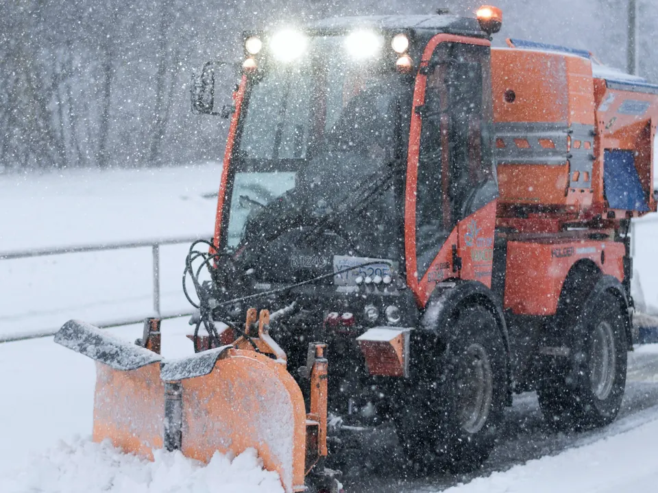
01Zimní údržba komunikací
Odklízíme sníh z komunikací a chodníků a sypeme tam, kde je kluzko. Pracujeme s vlastní technikou.
- Čištění zasněžených komunikací
- Posyp kluzkých chodníků
- Stroje s kartáčem pro menší i větší plochy
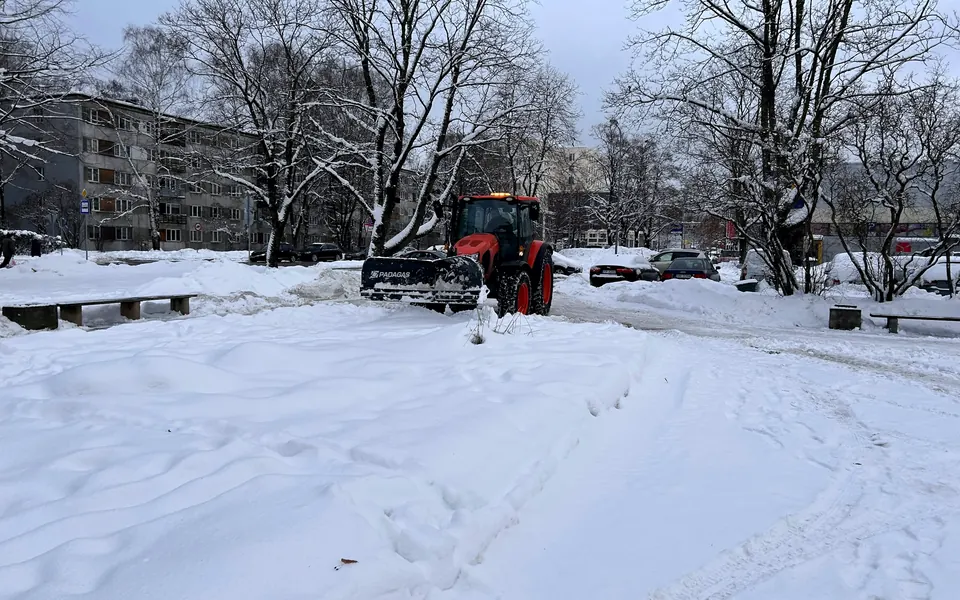
Praha a okolí. Pro správce budov, SVJ a firmy
Zimní údržba komunikací, údržba zeleně a pravidelný úklid od jedné firmy. Cenu sjednáváme podle náročnosti zakázky.
O nás
MM INSTALACE s.r.o. sídlí na Dvoreckém náměstí v Praze 4 Podolí. Pro správce budov, SVJ, firmy a majitele domů zajišťujeme zimní údržbu komunikací, údržbu zeleně a pravidelný úklid. Ceny sjednáváme podle náročnosti zakázky.
rok zápisu firmy do obchodního rejstříku
hlavní služby pod jednou střechou
spravovaných objektů
Doplní klientminut reakční doba na poptávku
Doplní klientSlužby
Vyberte, co potřebujete, nebo poptejte všechno najednou.

01Odklízíme sníh z komunikací a chodníků a sypeme tam, kde je kluzko. Pracujeme s vlastní technikou.
Zahradnické práce, sekání trávy a kácení stromů pro domy, firmy i pozemky.
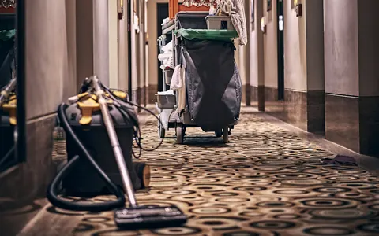
Pravidelný úklid bytových domů, paneláků, firem a kanceláří.
Potřebujete něco jiného? Popište nám to
Proč MM INSTALACE
Pro správce budov a SVJ je důležité, že se na dodavatele dá spolehnout. Takhle k tomu přistupujeme.
Zimu, zeleň i úklid řešíte s jednou firmou a jedním telefonním číslem.
Stroje s kartáčem, zametací stroje a sekačky. Podívejte se do sekce Naše technika.
Smluvní ceny podle náročnosti. Pevný ceník by neodpovídal tomu, jak různé objekty vypadají.
Sídlíme na Dvoreckém náměstí v Podolí a pracujeme v Praze a okolí.
Zde doplníme konkrétní závazek firmy (např. nástup po sněžení). Doplní klient
Před a po
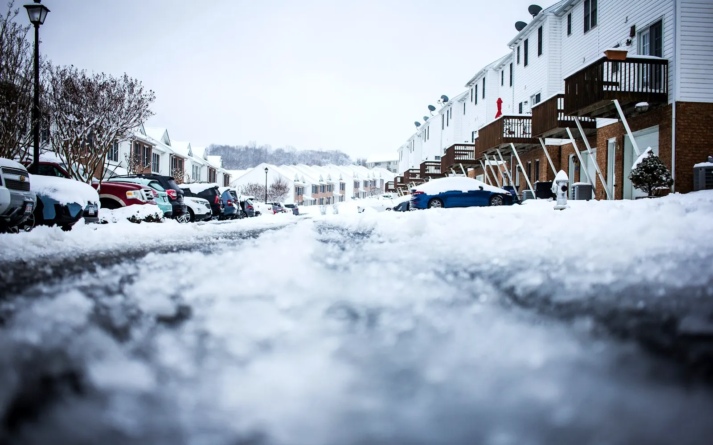
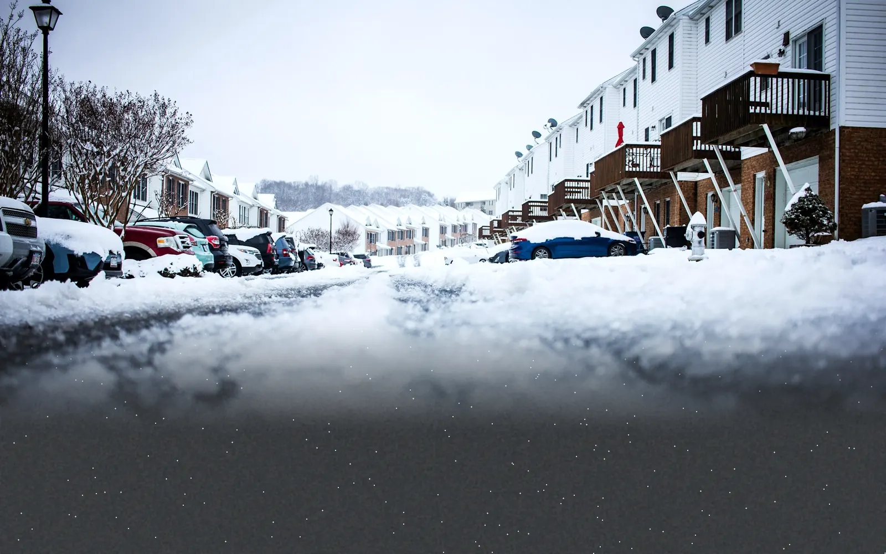
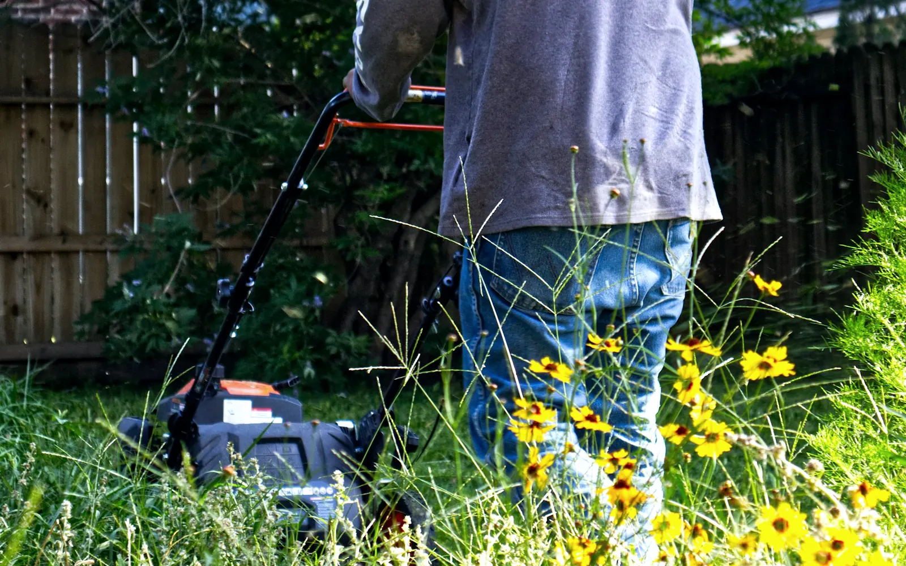
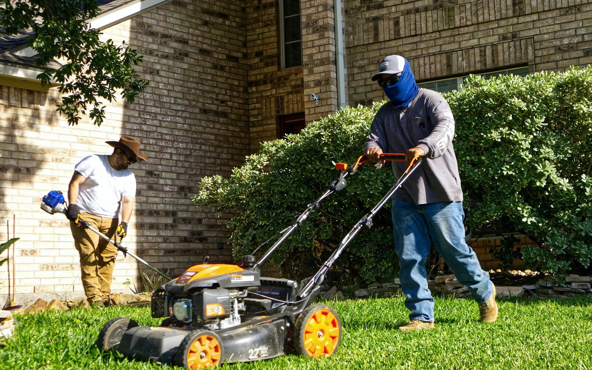
Táhněte posuvník doleva a doprava. Ukázkové snímky nahradíme fotkami z vašich zakázek.
Naše technika
Stroje s kartáčem a zametací stroje, které používáme na zakázkách.
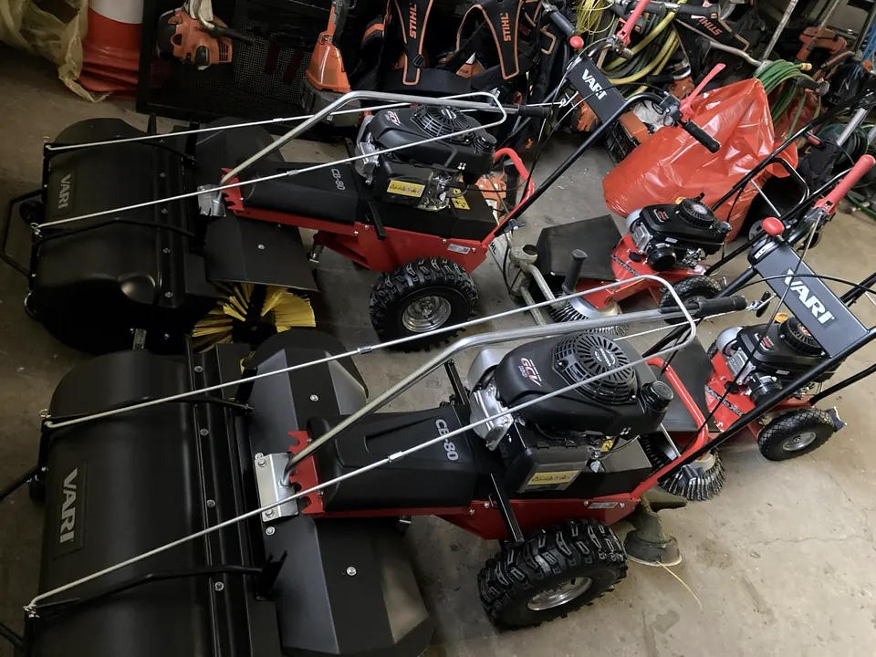
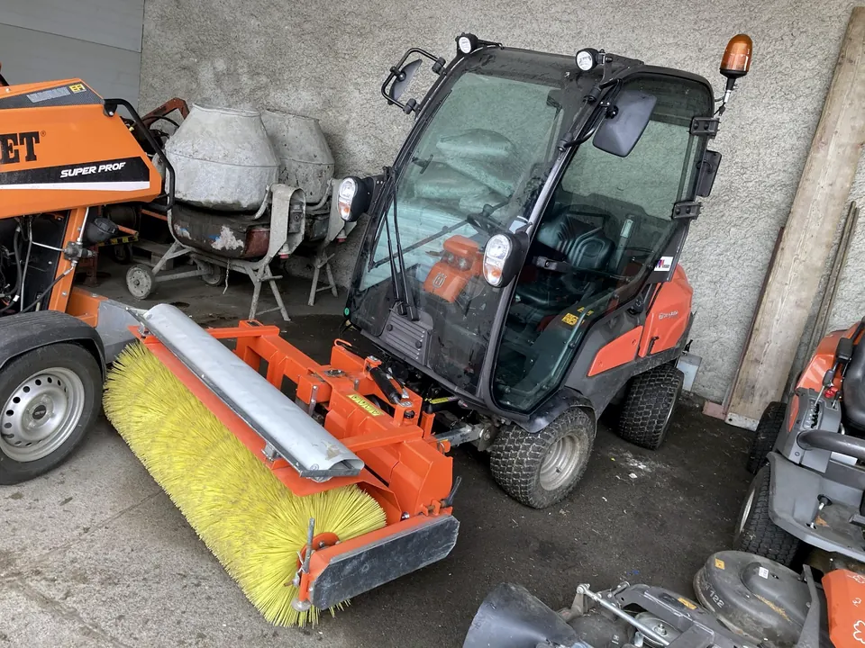
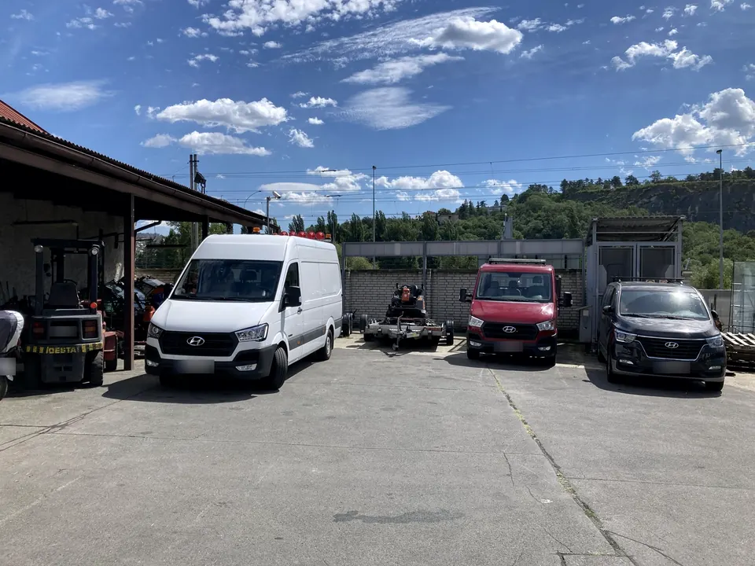
Jak spolupráce probíhá
Zavoláte nebo vyplníte formulář. Stačí adresa a co potřebujete.
Upřesníme rozsah a pošleme smluvní cenu podle náročnosti.
Domluvíme termíny a četnost prací. U zimy i způsob odklízení.
Naše technika a lidé vyjedou na místo.
Práce předáme a fakturujeme podle dohody.
Reference
Na tomto místě bude výběr referencí od správců budov, SVJ a firem.
Zde bude citace reference od klienta.
Zde bude citace reference od klienta.
Zde bude citace reference od klienta.
Cena
Pracujeme se smluvními cenami podle náročnosti zakázky. Nabídku připravíme na míru vašemu objektu.
Kolik metrů čtverečních komunikací, trávníku nebo podlah je potřeba udržovat.
Jednorázová práce, nebo pravidelná péče podle smlouvy.
Terén, překážky a možnost vjezdu techniky na místo.
Pošlete adresu a zadání, my se ozveme s konkrétní cenou.
Rychlá poptávka
Popište objekt a my navrhneme, jak ho udržíme průchozí. Čištění zasněžených komunikací i posyp chodníků.
+420 724 363 619Zkratka ZÚK označuje čištění zasněžených komunikací a posyp kluzkých chodníků. Staráme se o to, aby cesty kolem vašeho objektu zůstaly průchozí a bezpečné.
Pracujeme se smluvními cenami podle náročnosti zakázky. Cenu ovlivňuje hlavně velikost plochy, četnost prací a přístup k objektu. Pošlete nám adresu a zadání, nabídka je nezávazná.
Pro správce budov, SVJ, firmy a vlastníky domů v Praze a okolí.
Zaměřujeme se na pravidelný úklid bytových a panelových domů, firem a kanceláří. Pokud potřebujete něco jiného, popište nám to a ozveme se, jestli to zvládneme.
Ano, služby můžete poptat samostatně i dohromady. V poptávce stačí označit, co potřebujete.
Zavolejte na +420 724 363 619 nebo vyplňte formulář na této stránce. Po odeslání se vám ozveme a upřesníme zadání.
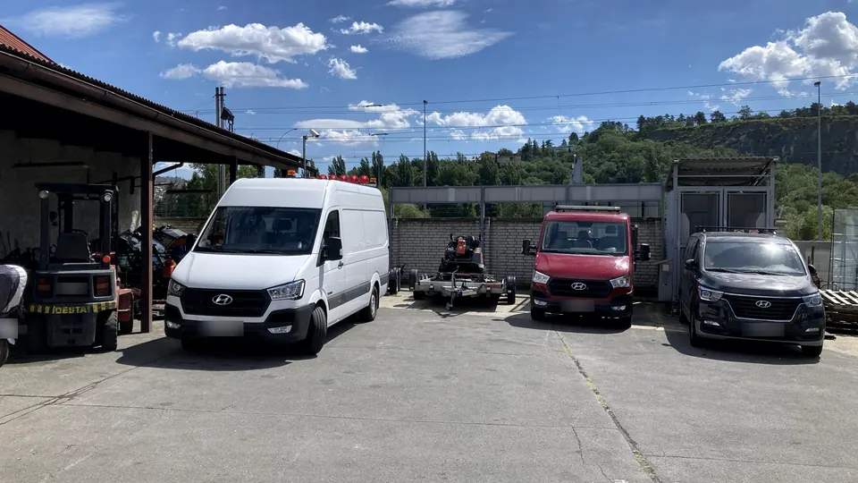
Mapu načteme až po vašem kliknutí, aby se nic nenačítalo bez vašeho vědomí.